Типографика
Важно, чтобы шрифты были бесплатными и не защищались авторскими правами.
Онлайн-сервисы с шрифтами
- Шрифты - Fonts Online
- Шрифты - Google Fonts
- Шрифты - Fonts4web(RUS)
- Шрифты - Fontriver(RUS)
- Шрифты - Fontstorage
- Шрифты - Webfonts
- Иконочный шрифт - Glyphter
- Иконочный шрифт - Fontello
- Иконочный шрифт - Font Awesome
- Вертикальный ритм текста
Конвертация шрифта
- Конвертатор шрифтов - Transfonter.org
- Конвертатор шрифтов - Fontsquirrel
- Конвертатор шрифтов - OnlineFontConverter
Шрифтовые пары
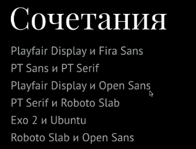
Типы шрифтов
АНТИКВА (serif). Шрифты с засечками
font-family:
'Times New Roman', Times, Georgia, 'Palatino Linotype', 'Hoefler Text',
Garamond, serif;
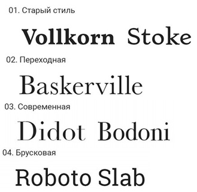
-
Старый стиль (Vollkorn, Stoke, Ladoga, Narevik)
Умеренный контраст, каллиграфичность, явно выражен наклон овалов и полуовалов. Первые машинописные шрифты, которые эволюционировали из каллиграфии. Сказочность, историчность, книжность.
-
Переходный стиль (Baskerville, Aelita)
Больший контраст. Исчезает наклон и каллиграфичность. Больше геометрии. Угловатые засечки. Классика, эстетика, традиционность.
-
Современный стиль (Didot Bodoni, Didona, Yeseva One)
Очень сильный контрас�т. Мода, глянцевость, превосходство.
-
Брусковый стиль (Roboto Slab, Geometric Slabserif, Pragmatica, Clarendon, Traktir, Titla brus)
Брусковые засечки. Надёжность, устойчивость.
ГРОТЕСК (sans-serif). Шрифты без засечек
font-family:
Arial, Verdana, Tahoma, Helvetica, Geneva, 'Lucida Grande', 'Gill Sans',
'Lucida Grande', 'Trebubuchet MS', 'Century Gothic', sans-serif;
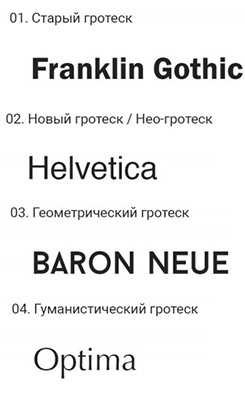
-
Старый стиль (Franklin Gothic)
Небольшой контраст, моноширинные, грубая форма. Грубая сила, реализм, революция
-
Новый стиль (Helvetica)
Минималистичная форма. Высокий строчный знак. Практичность, стандартность, нейтральность.
-
Геометрический стиль (BARON NEUE)
Близкий геометрическим формам, круг, квадрат, треугольник, прямоугольник. Минимализм, простота, лёгкость, новизна.
-
Гуманистический стиль (Optima)
Каллиграфичный штрих. Лёгкость, мягкость, утончённость, эстетика
МОНОШИРИННЫЕ (monospace)
Для кода, шифров, серийных номеров и т.д.
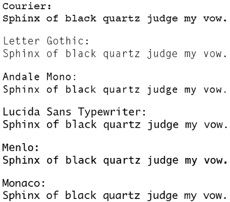
font-family:
'Courier New',
Courier,
Lucida Console,
Monaco,
'Comic Sans MS',
'Copperplate Light',
'Copperplate Gothic Light',
'Market Felt',
monospace;
РУКОПИСНЫЕ (script)
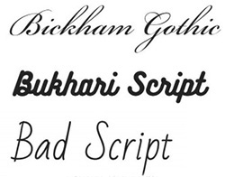
-
Перо (Bickham Gothic)
Имитируют написание остроконечным или острым п�ером. Аристократия, премиальность
-
Связные (Bukhari Script)
Имитируют написание разными инструментами с разным контрастом штриха. Винтаж, крафт, поделки, мягкость
-
Несвязные монолинейные (Bad Script)
Имитируют написание карандашом, маркером, кистью. Различные эмоции
ДЕКОРАТИВНЫЕ (decorative)
Для титульных листов, логотипов, ярлыков, афиш, плакатов, упаковок и т.п.
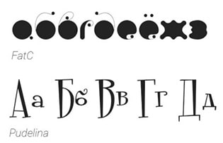
Рекомендации
- Шрифты можно подразделять на (нужно соблюдать роль шрифта во всем проекте):
- Основной (для текста, наборный)
- Заголовочный
- Подзаголовочный
- Цифровой, кодовый, цитатный (для шифров, кодов, цитат и т.д.)
- Декоративный (для логотипов, отдельных фраз)
- Нужно использовать шрифтовые пары (чтобы гармонично смотрелись заголовки и параграфы). Должны гармонично смотреться друг с другом. Лучше выбирать из одного семейства, искать похожие, либо подбирать по контрасту.
- Примерно 70% сайта составляет текстовый контент, остальные 30% - изображения, иконки, декаративные элементы;
- Не желательно совмещать один жирный шрифт с другим жирным;
- Нужно соблюдать типографическую иерархию (расставлять акценты для заголовков, подзаголовков и простого текста);
- Лучше когда есть сразу несколько начетаний одного шрифта (Regular, Bold и Light);
- Не стоит для одного проекта использовать большое количество шрифтов (достаточно 1-2, максимум 3);
- Не нужно использовать цветной текст или текст с тенью поверх картинок, нужно использовать оверлэй c темным цветом и полупрозрачностью
rgba(0,0,0,0.5); - С цветом текста лучше не экспериментировать - если вы используете белый фон, то пишите черным текстом, и наоборот. Не следует использовать яркие цвета больших текстовых блоков.
Заголовки
- 32pt ... 100pt (42 ... 133px) - примерные границы, лучше придерживаться небольших значений
- Трекинг: 0 ... -50 (неплохо могут смотреться слипшиеся буквы в заголовках)
- Шрифты для крупных заголовков должны быть читабельными, но в то же время запоминающимися.
- Задача — притягивать внимание. Заголовки должны быть жирными, акцентными.
- В заголовке должна отражаться основная мысль. Акцидентный шрифт.
- В конце заголовка точка НЕ СТАВИТЬСЯ
- Заголовок в тексте должен стоять ближе к следующему абзацу, чем к предыдущему.
- Пробел между с�троками прописных букв не может быть меньше кегля. (по правилам типографики)
- Должна быть логичная ИЕРАРХИЯ ЗАГОЛОВКОВ. Чем важнее заголовок, тем он крупнее.
- Можно выстраивать СМЫСЛОВУЮ ИЕРАРХИЮ внутри амого заголовка, выделяя амые важные слова большим кеглем или цветом.
Подзаголовки
18pt ... 32pt (24 ... 42px) - примерные границы
Наборный текст
- 12pt ... 18pt (16 ... 24px) - примерные границы
- 14pt (18.6px) - стандарт для Regular наборного текста
- Трекинг: 0 ... 30 (примерно 20 можно использовать)
- Оптимальное значение 45-90 символов, включая пробелы.
- Наборный текст лучше располагать в одну колонку, много колонок нужно создавать только при острой необходимости
- Шрифты для основного (наборного) текста должны быть ненавязчивыми и хорошо читабельными - от этого зависит, насколько быстро и просто пользователь будет воспринимать информацию с сайта.
- Основной текст для описания информации. Акценты можно делать жирным или курсивом, но не злоупотреблять. Для гротесков акцент лучше жирным чем курсивом.
- Должна быть визуальная ИЕРАРХИЯ заголовков и параграфов
- Моноширинные тексты плохо читабельные.
- Наборный должен быть сбалансированным.
- Шрифты без засечек хорошо читается в мобильных приложениях.
Цифры
- Для цифровых данных лучше подойдут моноширинные гарнитуры;
- Цифровые данные должны быть выровнены по правому краю;
- Текст в первой колонке - по левому;
- Заголовок в колонке - по той же стороне, что и контент под ним.
Правило внутреннего и внешнего
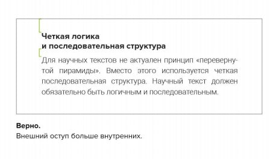
Внешние отступы должны быть больше внутренних. Поля -> Заголовки -> Абзацы -> Элементы.
Поля
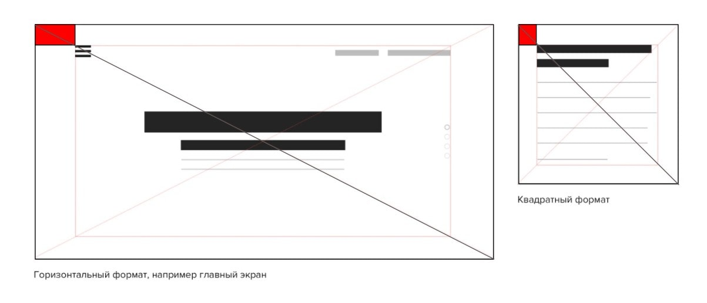
Швейцарская типографика
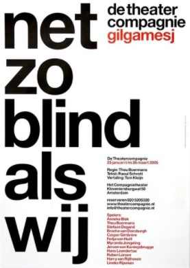
Отступление от классических правил типографики. Большие заголовки, фотографии вместо иллюстраций, выравнивание только по левому краю. Цвет текста всегда чёрный. Цвет фона и илюстраций всегда один яркий. Гарнитуры являются голосом. Кегль показывает носколько громко или тихо мы говорим. Начертание задаёт тон общения.
Терминология
ГАРНИТУРА - семейство шрифтов с общими стилистическими особенностями.
font-family: sefif, sans-serif, monospace;
ШРИФТ - набор символов, составляющие единую стилистическую и композиционную картину.
Шрифты нужно выбирать осознанно. Учитывать задачи, аудиторию, эмоции, общий дизайн и концепцию. К шрифтам НЕ НУЖНО применять большое количество графических эффектов, считается дурным тоном (такие как градиенты).
НАЧЕРТАНИЕ - возможные варианты рисунка наборного шрифта одной гарнитуры.
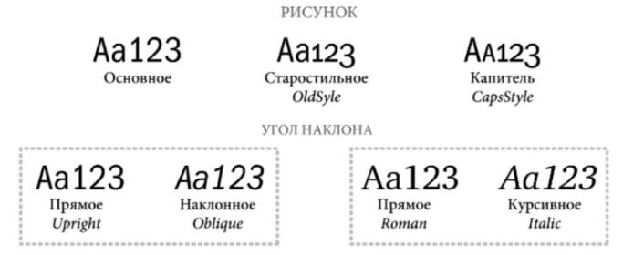
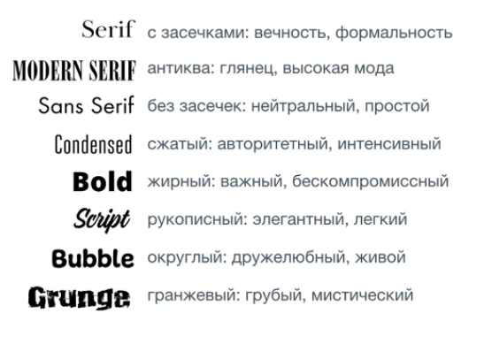
font-weight: normal | bold | 100-900;
font-style: normal | italic;
КЕГЛЬ - размер высоты буквы.
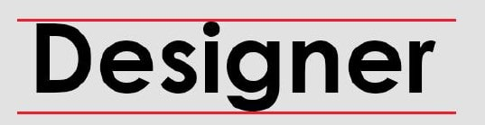
font-size: 16px;
КЁРНИНГ - интервал между буквами в зависимости от их формы.
letter-spacing: 1px;
ТРЕКИНГ - изменение кёрнинга.
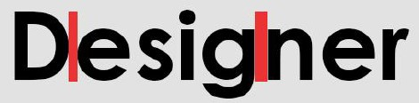
Трекинг лучше использовать только для ПРОПИСНЫХ букв.
- 0 - кёрнинг выключен
- Optical - алгоритм браузера
- Metrics - родные алгоритмы кёрнинга, заданные разработчиками
ИНТЕРЛИНЬЯЖ - растояние между строк
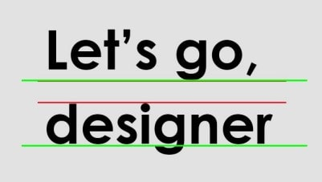
line-height: 20px;
ДЛИНА СТРГОКИ - кол-во символов в строке. Оптимальное значение 45-90 символов, включая пробелы.
ГРАФЕМА - базовая форма зна�ка, скелет буквы. Есть целая наука и терминология по изготовлению шрифтов.
ВИСЯЧИЕ СЛОВА - плохой тон. Одинокое слово в конце абзаца, союзы и предлоги, оставшиеся в конце строки.
ВЫКЛЮЧКА - выравнивание текста.
ГИПЕРССЫЛКА - переход между страницами. Должна быть достаточно длинной для удобства нажатия, но не очень. Если сслылок в абзаце много, то их лучше выносить отдельно под абзац.
ТИРЕ (-) - орфографический знак, короткая чёрточка (серо-буро-малиновый)
1—8 классы (без пробелов)
Термин — определение (с пробелами)
— Привет! (диалоги)
(–) короткое
(—) длинное
Тире НЕ ПЕРЕНОСИТЬСЯ на новую строку, а остаётся на предыдущей
ДЕФИС (-) - пунктационый знак, длинная чёрточка («назвался груздём - полезай в кузов»).
КАВЫЧКИ (« », " ", ' ').
В текстах используются кавычки-ёлочки Если кавычки в кавычках, то внешние ёлочки, а внутренние лапки-запятушки(двойные). «Кавычки в "кавычках"» Шрифт Avabella - красивые кавычки